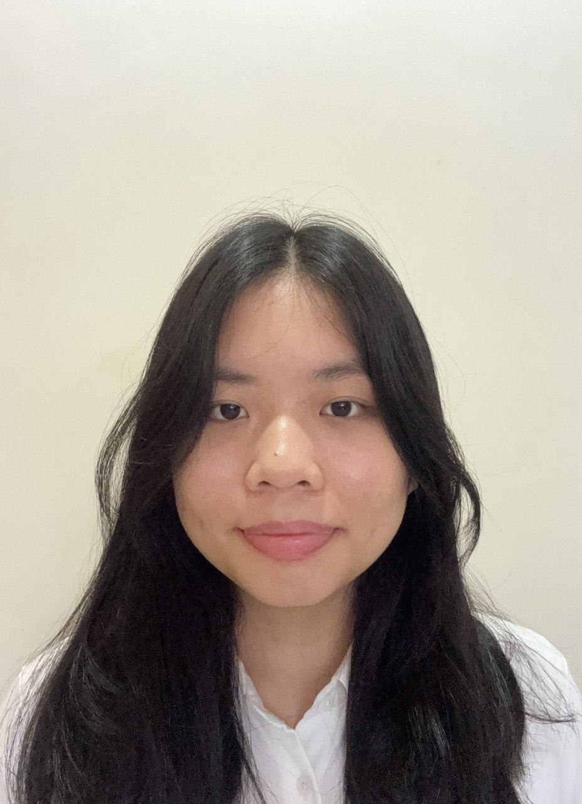

About Me
I am a second-year Information Technology student at Ngee Ann Polytechnic, specializing in Software Engineering. Driven by a passion for technology, problem-solving, and continuous learning, I actively seek opportunities to apply and expand my skills through projects. These experiences not only enhance my technical abilities but also strengthen my time management and problem-solving skills, preparing me to tackle real-world challenges in software development. I am excited to keep learning, building, and innovating in the world of tech! Take a look at my work and feel free to reach out!
Technical Skills
- Programming Languages: Python, Java, C#
- Web Development: HTML, CSS, JavaScript
- Database Management: SQL
- Data Visualization Tools: Tableau, PowerBI
- Design & Prototyping Tools: Canva, Adobe XD, Figma
- Software: Visual Paradigm, Visual Studio Code, Visual Studio 2022
Soft Skills
- Teamwork
- Time Management
- Communication
- Problem Solving
- Attention to Detail